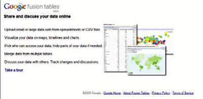
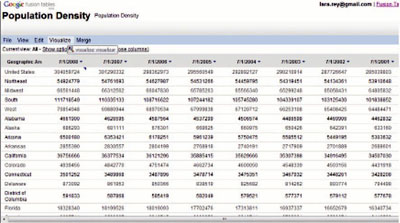

Vigilancia 2.0 consiste en utilizar aplicaciones y sitios 2.0 para la búsqueda y filtrado de información pero también, en aprovechar la inteligencia colectiva y los efectos de red para vigilar el entorno siguiendo un modelo distribuido que permita el acceso a contenidos actualizados y relevantes para la organización.
La Vigilancia 2.0 implica entonces un cambio cultural. No se puede circunscribir a un departamento, sino que tiene que “socializarse” en la organización, y abordarse como una tarea donde la inteligencia colectiva puede mejorar los resultados.
En resumen, la detección de señales o “patrones” de interés estratégico para la empresa ya no es una tarea exclusiva del “gran capitán” (incapaz de mirar a tantos lugares a la vez), sino que depende del trabajo colaborativo de muchas antenas conectadas en red.
Una primera ventaja de la Vigilancia 2.0 es el sustancial abaratamiento de costes que puede significar el uso de estas herramientas.
Cualquier profesional puede crear su sistema de alertas o de sindicación RSS a medida y estar informado sobre los mercados, las nuevas tecnologías que afecten a su sector, la presencia de sus competidores en la Red y las publicaciones de interés, de un modo fácil y automatizado.
Hoy en día va siendo obsoleta la práctica de navegar por Internet a la caza y captura de un posible nuevo contenido en alguna de las webs que ya tenemos identificada como interesantes.
Para eso al abrir nuestro agregador dispondremos ya de todos esos contenidos sin haber invertido tiempo en su localización, así la tarea se convierte en altamente eficaz, permitiendo al experto (trabajador o directivo) centrarse en el análisis y aplicación del conocimiento para el provecho de la empresa.
Otra de las ventajas, igual de importante, es la mejora de la productividad gracias a los filtros, sistemas de alerta y sobre todo aprovechando la inteligencia colectiva existente en la red.
La información vital para muchas organizaciones ya no se encuentra sólo en las publicaciones científicas o sectoriales, sino que esta fluyendo libremente, y con mucha mas velocidad, por las redes sociales, en los blogs†y en el microblogging.

Pdf Search Engine: http://www.pdf-search-engine.com/
Return My Pants: http://www.returnmypants.com
Web que ofrece un útil recurso para todos los que andamos siempre prestando cosas, y la mayor parte de las veces, perdiéndolas por no recordar a quién se la hemos dejado. La interfaz es sencilla y clara y cumple perfectamente su objetivo: gestionar lo que prestas y te prestan (imaginemos que el servicio de VT de una empresa tiene una bibloteca de apoyo).
Masterbranch: http://www.masterbranch.com
Agrega toda nuestra actividad en proyectos de código abierto y en sitios de preguntas y respuestas y la muestra en una página. Es una mezcla de red social y gestor de curriculums, puesto que podemos seguir a otros usuarios, actualizar nuestro estado,...
Google fusion tables: http://tables.googlelabs.com
Google ofrece un nuevo servicio en fase beta llamado Google Fusion Tables, se trata de una herramienta web, enfocada a trabajar de forma colaborativa en la nube con un conjunto de datos relativamente grande puesto que dejará subir archivos tanto .csv como en formato Excel hasta un máximo de 100MB. ¿Y qué podemos hacer con esos archivos? Pues básicamente se pueden consultar sus datos en formato tabla paginada, aplicar numerosos filtros que permiten un grado de personalización muy elevado, podemos incluso definir agregaciones o bien pintar gráficos con ellos, unos gráficos realmente bien presentados, con muchas opciones de visualización e interactivos: siempre podremos clicar en cualquier valor del gráfico para saber el dato relacionado. Incluso es capaz de presentar un Mapa del mundo y colores correspondientes a alguna magnitud.
Rememberthemilk: http://www.rememberthemilk.com
Delicious: http://delicious.com
del.icio.us es un servicio de gestión de marcadores sociales en web. Permite agregar los marcadores que clásicamente se guardaban en los navegadores y categorizarlos con un sistema de etiquetado denominado folcsonomías (tags). Pero no sólo puede almacenar sitios webs, sino que también permite compartirlos con otros usuarios de del.icio.us y determinar cuántos tienen un determinado enlace guardado en sus marcadores.
Slideshare: http://www.slideshare.net
Slideshare es un espacio gratuito donde los usuarios pueden†enviar presentaciones Powerpoint u OpenOffice, que luego†quedan almacenadas en formato Flash para†ser visualizadas online. Es una opción interesante para compartir presentaciones en la red. Admite archivos de hasta 20 Mb de peso, sin transiciones entre diapositivas.
Scribd: http://www.scribd.com
Scribd es un nuevo servicio que combina red social con el alojamiento de documentos ofimáticos.
Acepta los formatos que más utilizamos (doc, pdf, ppt) y otros.
Podemos obtener el código para insertarlo en nuestros blogs.
Podemos bajárnoslo en los formatos pdf, word, txt y archivo de audio mp3.
Nos lee el documento de viva voz. Por ahora es sólo curiosidad divertida pues lee los documentos como lo haría un inglés sin conociemientos de castellano, es decir, casi incomprensible.
Cualquier usuario lo podrá añadir a favoritos, comentarlo, enviarlo por correo electrónico, votarlo, etc.
No es necesario registrarse para subir documentos, pero sin ello no podremos acceder a otros servicios.
Metal 2.0: http://www.metal20.org
Biblioteca Digital Mundial: http://www.wdl.org/es/
BIznar: http://biznar.com
Último acceso a los enlaces 29-09-2009
Google Received 72 Percent of U.S. Searches in January 2009.
http://image.exct.net/lib/fefc1774726706/d/1/SearchEngines_Jan09.pdf
10 Steps to Selecting the Right CI Software: A Practitioner’s Pers pective.
MKM Consulting´s weblog.
Informação é um ativo valioso para você e sua empresa?
Alcoa alinha Inteligência de Mercado à área de Procurement.
http://www.metaanalise.com.br/inteligenciademercado/index2.php?option=com_content&do_pdf=1&id=2111
Pesquisa revela que 88% dos internautas realizam compras pela web.
http://www.metaanalise.com.br/inteligenciademercado/inteligencia/pesquisas/index.php
Herramienta informática para vigilancia Tecnológica — Vigtech.
http://pisis.unalmed.edu.co/avances/archivos/ediciones/Edicion%20Avances%202007%201/15.pdf
Software para la vigilancia tecnológica de patentes: evaluación desde la perspectiva de los usuarios.
http://www.elprofesionaldelainformacion.com/contenidos/2006/noviembre/06.pdf
Herramientas de Software especializadas para Vigilancia Tecnológica e Inteligencia Competitiva.
Vigilancia Tecnológica de las Herramientas basadas en Software Libre – 2006.